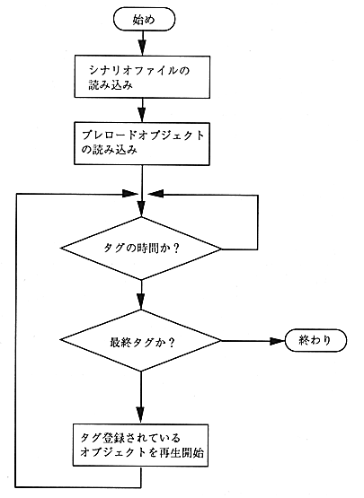
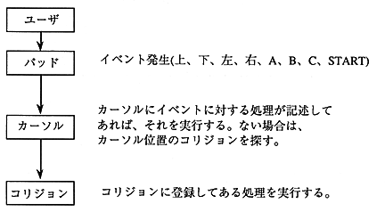

Return to previous page ｜ Return to menu ｜ Go to next page
-
4.4 Function
-
Processing flow
-
The author player processing flow is shown in Figure 4.5, and the event processing flow is shown in Figure 4.6.

Figure 4.5 Processing flow

Figure 4.6 Event processing flow
Return to previous page ｜ Return to menu ｜ Go to next page